March 2021 (version 1.55)
Update 1.55.1: The update addresses these issues.
Update 1.55.2: The update addresses these security issues.
Downloads: Windows: User System Arm64 | Mac: Universal Intel silicon | Linux: deb rpm tarball Arm snap
Welcome to the March 2021 release of Visual Studio Code. There are a number of updates in this version that we hope you will like, some of the key highlights include:
- Accessibility improvements - Multi-cursor support and increased line limit.
- Updated icons for macOS Big Sur - Brand icons that match the visual style of Big Sur.
- Improvements to breakpoints - Inline breakpoints menu, and more.
- Editor status decorations - Editor tab status decorations are on by default.
- Customize keyboard shortcuts editor - Resize columns in the keyboard shortcuts editor.
- Improved remote ports management - Port forwarding autodetection, regex naming, and more.
- Terminal profiles - Define profiles in terminal to conveniently launch non-default shells.
- Notebook improvements - Multiple cell selection, and more customizable diff editor.
- VS Code on Raspberry Pi - New topic explaining how to install VS Code on Raspberry Pi devices.
If you'd like to read these release notes online, go to Updates on code.visualstudio.com.
Join us live at the VS Code team's livestream on Thursday, April 8 at 8am Pacific (4pm London) to see a demo of what's new in this release, and ask us questions live.
Insiders: Want to try new features as soon as possible? You can download the nightly Insiders build and try the latest updates as soon as they are available.
Accessibility
Multi-cursor support
We have added initial screen reader support for multiple cursors. Whenever a new cursor is added, VS Code now announces it along with the cursor line and column position. VS Code also announces when secondary cursors have been removed. We plan to further improve multi-cursor accessibility as we receive more feedback.
Increased limit to 1000 lines for screen reader
Thanks to upstream issues being fixed, we have increased the number of lines that a "Say All" command can read. Previously, we had a hard limit of 100 lines that could be announced by a screen reader at one time, and we have now increased this limit to 1000. Further upstream fixes are needed in order for us to not have any limit at all.
Due to this change, the setting editor.accessibilityPageSize is now deprecated. We will still support this setting in the next couple of releases, however we plan to fully drop it in the future.
Workbench
Encryption update on Windows
We've changed the way we encrypt secrets on Windows, which impacts Settings Sync and extensions using the secrets API. Users on Windows will be automatically signed out on update and will need to authenticate again.
Updated brand icons for macOS Big Sur
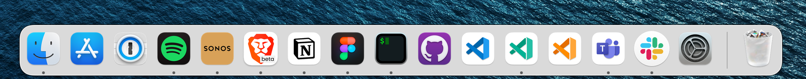
We've been working on updating the VS Code brand icons on macOS to match the new visual style of Big Sur. We've appreciated all of the feedback from the community, and we are happy to release the new logos for Stable and Insiders. We are also using the same logos on all platforms.
| Stable | Insiders | Exploration |
|---|---|---|
| 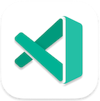 |
Improved sash customization
A new workbench.sash.hoverDelay setting lets you define the delay for the hover feedback of sashes. The existing workbench.sash.size setting has been improved in order to still provide a large surface grabbing area for touch devices, while keeping the UI clean.
Improved List/Tree navigation
Lists and Trees now support a custom keyboard navigation mode that behaves more naturally in specific areas such as Notebooks.
Additionally, Shift+Click range selections behave more deterministically.
Tab decorations on by default
Tab decorations for editors are now on by default, to configure them use workbench.editor.decorations.colors and workbench.editor.decorations.badges
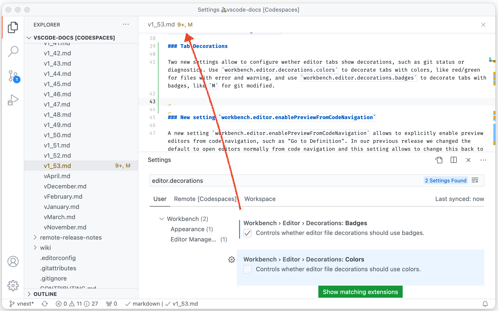 Theme: GitHub Light Theme
Resizing columns in Keyboard Shortcuts editor
The Keyboard Shortcuts editor is now refactored to use the new table widget, allowing users to resize the columns in the editor.
Extension management improvements
-
VS Code now detects extensions installed/uninstalled through the VS Code CLI. Extensions can be activated/de-activated in the active window (instance) and will be correctly displayed in the Extensions view.
-
VS Code now shows the set of extensions included in an extension that sets the
extensionPackproperty in a separate Extension Pack tab even when the extension is not categorized as Extension Packs.
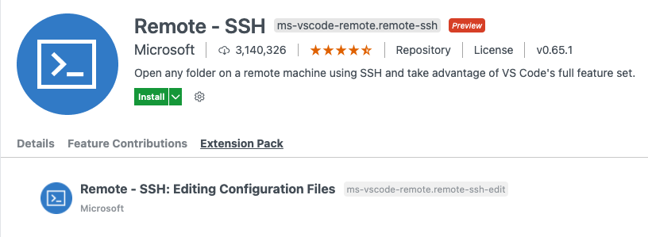
Theme: GitHub Light Theme
Negative text filtering in Problems view
You can now filter problems that do not contain specific text from the Problems view by prepending ! to the filter text.
Reporting Marketplace issues
Last month we highlighted that there's a new public repository for issues related to the Extension Marketplace. Now, VS Code's issue reporter supports creating issues in this repository.
Configure tree hover delay
The hover delay for extension contributed tree views can now be configured with workbench.hover.delay.
Emmet
The emmet.extensionsPath setting now takes in only string arrays, and can be directly edited in the Settings editor.
Search in Open Editors
You can now toggle the Search Only in Open Editors checkbox in a workspace search to change from searching the entire workspace to only searching in files that have been opened in editor tabs. This previously was enabled via an opt-in, this iteration we've enhanced the behavior with files that have not yet been loaded in the VS Code session and enabled it by default.
Control the font size of the Source Control input
You can now change the font size of the Source Control input via the new scm.inputFontSize setting.
Integrated Terminal
Terminal profiles
The terminal now supports defined profiles, which appear in the terminal's dropdown, to conveniently launch non-default shells:
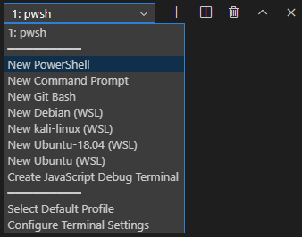
VS Code will automatically detect and surface some of the more commonly used shells through this menu, but they can also be configured using the terminal.integrated.profiles.<platform> setting. With this setting, it's possible to add new profiles, change existing profiles and remove default profiles. For example:
"terminal.integrated.profiles.windows": {
// Add a PowerShell profile that doesn't run the profile
"PowerShell (No Profile)": {
// Some sources are available which auto detect complex cases
"source": "PowerShell",
"args": ["-NoProfile"],
// Name the terminal "PowerShell (No Profile)" to differentiate it
"overrideName": true
},
// Remove the builtin Git Bash profile
"Git Bash": null,
// Add a Cygwin profile
"Cygwin": {
"path": "C:\\cygwin64\\bin\\bash.exe",
"args": ["--login"]
}
}
The recommended way to initially add a profile is via the Select Default Profile command, which allows creating profiles based on either an existing profile or other detected shells.
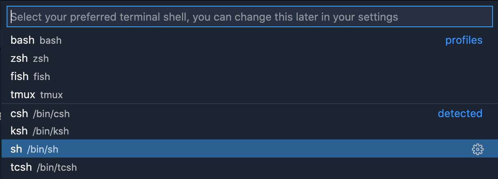
Auto detected WSL profiles and improved defaults on Windows
Along with the new profiles feature, we now auto detect WSL profiles and show them in the list by default. This can be turned off with the terminal.integrated.useWslProfiles setting.
Cygwin is also now auto detected and exposed in the Select Default Profile command and Git Bash will run as a login shell (running ~/.bash_profile).
WebGL renderer is the new default
The terminal first got the experimental WebGL renderer back in the November 2019 release, which based our calculations at the time could increase performance by up to 900% and by even more if your environment had issues with rendering using a standard 2D canvas context.
Since then, the WebGL renderer has gradually improved in stability and had its feature gap closed. We decided now is as good a time as any to make the transition, but will be watching for any issue reports.
As part of this work we also added some fallback logic. When "terminal.integrated.rendererType": "auto", the following happens:
- The WebGL renderer will try to start up.
- If it fails, for example due to lack of OS/browser support:
- The canvas renderer will be enabled and the time it takes to render a frame will start to be measured.
- If the first 20 frames are rendering slowly, for example if there are hardware issues or GPU rendering is disabled:
- The DOM renderer will be enabled.
In the next release, we plan on removing the rendererType setting all together in favor of a much more understandable "terminal.integrated.gpuAcceleration": "auto" | "on" | "off".
Seamless terminal relaunching
Last release, we introduced automatic relaunching of terminals when an extension wants to change the environment. This release will now prevent the flickering that was caused before when the relaunch occurs. If the output of the new terminal is identical to the last, there is no feedback or distractions caused by the relaunch.
There is also a new setting to disable this automatic relaunching all together terminal.integrated.environmentChangesRelaunch.
Editor
New auto closing pair deletion
The behavior of pressing Backspace has changed when inside auto-closing pairs. The editor will now delete the matching closing bracket or matching closing quote only if the editor auto-inserted that character. This behavior is controlled via a newly introduced setting called editor.autoClosingDelete, which can be configured to "always" to get the previous behavior.
Debugging
Improvements to breakpoints
Inline menu to edit conditions and hit count
We now show an inline menu for editing conditions and hit counts for function breakpoints. Previously the inline edit button would choose automatically what condition to edit. Now, the menu should make the flow easier and give more control to the user.
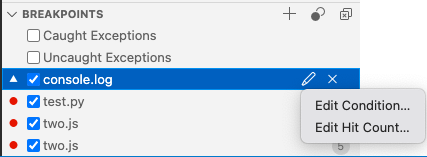
Support for all access types of data breakpoints
Now VS Code's generic debugger UI supports all data breakpoint access types defined in the Debug Adapter Protocol as context menu actions in the VARIABLES view:
- Break on Value Read: breakpoint will be hit every time a variable gets read.
- Break on Value Change: breakpoint will be hit every time a variable gets changed (this action was previously available).
- Break on Value Access: breakpoint will be hit every time a variable is read or changed.
Please note that debug extensions have to opt into this feature in order to make individual actions available. For now, only the Mock Debug extension has (simulated) support for all three access types, but we expect other debug extensions to follow soon - such as the Java extension.
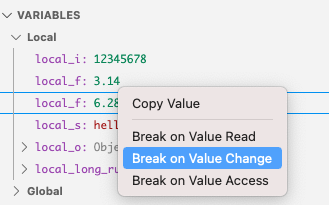
Clearing a terminal before launching a debuggee
Some debug extensions allow you to launch debuggees in VS Code's Integrated Terminal. In order to keep the number of Integrated Terminals small, VS Code tries to reuse a terminal if it is not blocked by a still running command. A consequence of this approach is that previous commands and program output will remain visible in the terminal, which is sometimes confusing.
In this release, we've introduced a new feature to automatically clear the Integrated Terminal before starting a new debug session. The feature is controlled by the new setting debug.terminal.clearBeforeReusing.
JavaScript debugging
As usual, the complete list of changes can be found in the vscode-js-debug changelog.
Start Debugging and Stop on Entry
When we moved to our new debugger, last year, the Debug: Start Debugging and Stop on Entry was left behind. It once again works, and requests the debugger to pause on the first line of your Node.js program. By default it is bound to F10.
Improved handling of symbolic links
Debugging Node.js programs with symbolic links can require special flags to be passed to the program. Without these flags, breakpoints remained unbound, and it was hard to figure out what was going wrong. Now, the debugger will automatically detect these cases and provide a helpful notification.
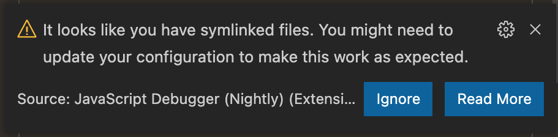
Notebooks
Multiple cell selection
We now support selecting multiple cells in a Notebook using the mouse (Shift+Click) or keyboard shortcuts (Shift+Arrow). Once multiple cells are selected, you can then copy/cut/paste/move/duplicate selected cells.
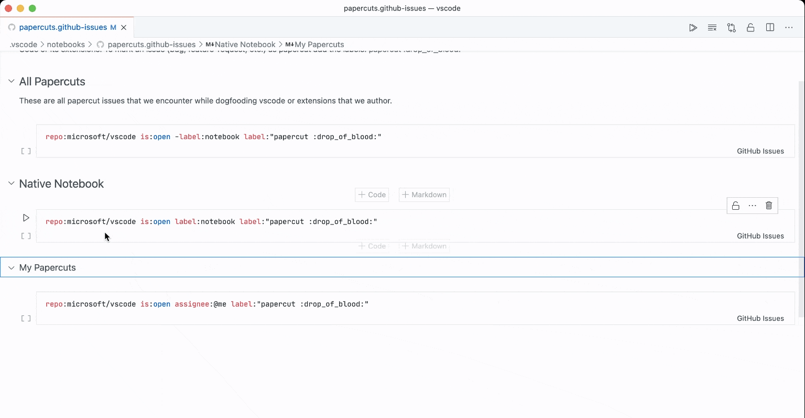
You can also drag and drop multiple cells together.
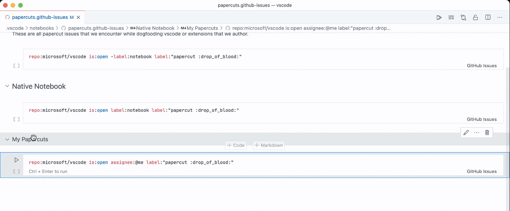
Limitations: When there are multiple distinct ranges of cells selected, most commands will only be executed against the first range or the focused range. We will continue improving this experience in upcoming releases.
We also added a new color token, notebook.inactiveSelectedCellBorder, that has no default color but is available for themes that prefer to use borders for multi-select instead of background colors:
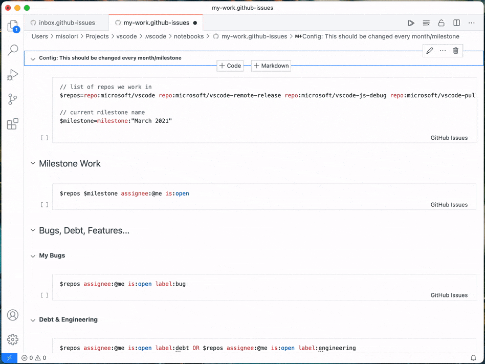
Show/hide output and metadata differences in the diff editor
We have heard from users that when reviewing changes in a Notebook, the modifications in notebook cell metadata or outputs can be distracting or irrelevant. VS Code now allows you to control the visibility of metadata or output changes in the diff editor using the settings notebook.diff.ignoreMetadata and notebook.diff.ignoreOutputs. They can also be toggled by using the Show Outputs/Metadata Differences command from the editor title toolbar.
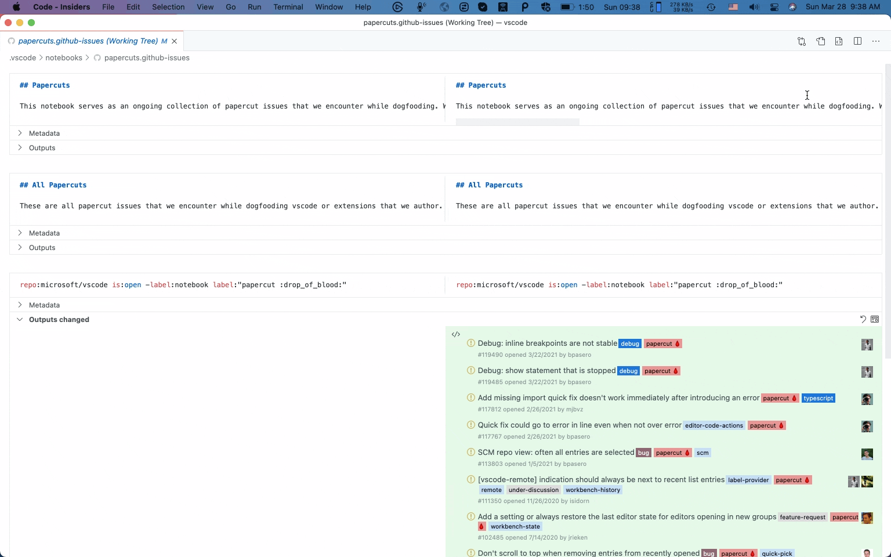
Preview features
Continued improvements to extensible Markdown renderers in Notebooks
We continued improving our support extending the Markdown renderer in Notebooks. Our focus this iteration was improving performance of the new renderers. We also fixed many regressions that the new renders introduced.
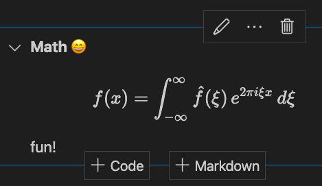
The new renderers are still disabled by default but we are now more confident that we will be able to enable them soon. You can try out the new extensible Markdown renderers today with the undocumented notebook.experimental.useMarkdownRenderer: true setting. After enabling this setting and restarting VS Code, you should be able to use :emoji: and KaTeX $math$ formulas in Markdown cells.
Getting Started
We are continuing an overhaul of our default startup editor in order to provide relevant extension-contributed tips and walkthroughs, intended to make both core VS Code features and extension contributions more approachable to new users. Many Insiders users may have already seen it, and it will be slowly rolled out to more Stable users over the course of this iteration. You can always opt in or out of the new behavior by modifying the workbench.startupEditor setting to or away from gettingStarted.
 Theme: GitHub Light
Theme: GitHub Light
Contributions to extensions
Remote Development
Work continues on the Remote Development extensions, which allow you to use a container, remote machine, or the Windows Subsystem for Linux (WSL) as a full-featured development environment.
Feature highlights in 1.55 include:
- Double-click to name ports
- Configure default port detection behavior
- Updated experience for cloning a repository in a container volume
You can learn about new extension features and bug fixes in the Remote Development release notes.
GitHub Pull Requests and Issues
Work continues on the GitHub Pull Requests and Issues extension, which allows you to work on, create, and manage pull requests and issues.
To learn about all the new features and updates, you can see the full changelog for the 0.25.0 release of the extension.
Extension authoring
Untitled file API for custom editors & Notebooks
Custom editors and Notebooks now include an untitledDocumentData property on the open context, which includes the buffer of the data included in the untitled file that the user triggered a Reopen With on. This property should be read instead of the URI if populated as the URI doesn't point to a file on disk in the untitled file case.
Inline values provider API
The proposed inline values provider API introduced last milestone has been finalized and can now be used in extensions published on the Marketplace.
New Copy As submenus
There are two new menu locations, which appear in the UI as a Copy As submenu:
menuBar/edit/copy- for the title bar Edit menueditor/context/copy- for the editor context menu
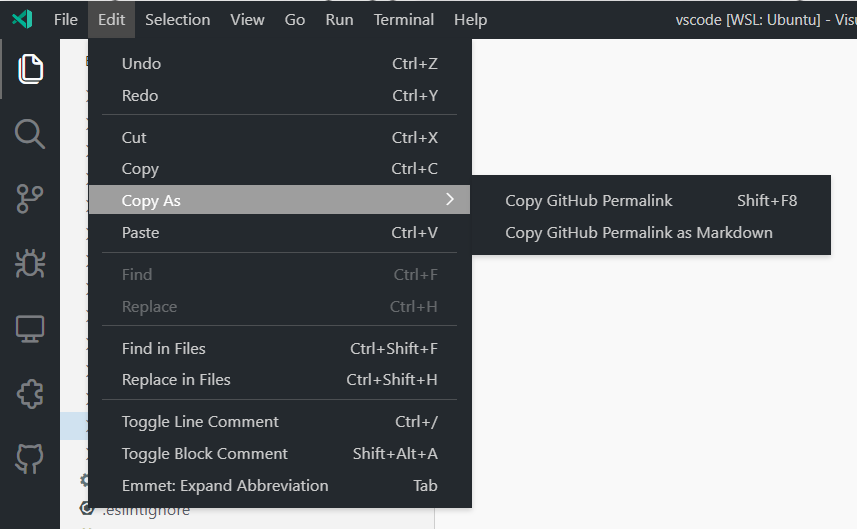
New extension property on ExtensionContext
Extension authors can now use the new extension property on ExtensionContext, which is passed into the extension's activate function. This returns the same Extension instance that vscode.extensions.getExtension(<extension-id>) returns, which contains properties such as the extension's ID, version, and a serialized packageJSON property where you can access data directly from your extension's package.json file.
Docker compose language
A new Docker compose language has been added. This won't have much user facing change; however, extension authors can now use this to target Docker compose files. The language ID is dockercompose.
Telemetry enablement API
Extensions could always check whether or not the user had disabled telemetry via the configuration value of telemetry.telemetryLevel, but it was not possible to check if the user had used the CLI flag --disable-telemetry. This milestone, we've added two more properties to the env object of extension API: isTelemetryEnabled and onDidChangeTelemetryEnabled. The former takes into account the CLI flag and the current configuration value. The latter is event that fires any time isTelemetryEnabled changes.
Workspace Trust development
For several iterations, we have been exploring a security feature we refer to as Workspace Trust. As we near its release, we seek to engage extension authors to start their onboarding process and get feedback. At the present, extensions that are not updated to handle Workspace Trust will inherit safe defaults; however, for an optimal user-experience, we request extension authors read more information in issue #106488 and subscribe for updates as we progress through the next iteration.
Proposed extension APIs
Every milestone comes with new proposed APIs and extension authors can try them out. As always, we want your feedback. This is what you have to do to try out a proposed API:
- You must use Insiders because proposed APIs change frequently.
- You must have this line in the
package.jsonfile of your extension:"enableProposedApi": true. - Copy the latest version of the vscode.proposed.d.ts file into your project's source location.
You cannot publish an extension that uses a proposed API. There may be breaking changes in the next release and we never want to break existing extensions.
Testing
This month our work was focused around resolving the provider portion of the testing APIs. Primarily, moving to an approach that allows for tests to be loaded on-demand and asynchronously. Shifting to an asynchronous approach presented challenges that required semantics new to the extension host API to solve. This iteration we merged in the changes, and will refine them over the coming month. We hope to begin finalizing portions of the testing API in our April iteration.
CodeActionContext.triggerKind
The proposed triggerKind property on CodeActionContext tracks why code actions are being requested from a CodeActionProvider. The possible values of this property are:
-
Invoke: Code actions were requested explicitly, either with a keyboard shortcut or command. -
Automatic: Code actions were requested without explicit user action. This includes requesting code actions when the contents of a document change.
Providers can use triggerKind to return different sets of results depending on how code actions are requested. For example, a refactoring code action provider that is triggered automatically may only return refactorings for the exact current selection in order to limit how often the code action lightbulb shows up. However when code actions are explicitly requested, the same provider may automatically expand the current selection to try to show all the refactorings that a user may be interested in at the current location.
PortAttributesProvider
Any extension that starts processes that listen on ports and wants to have a stellar experience when used with a VS Code remote extension should consider providing feedback and adopting the new PortsAttributesProvider API. Since VS Code detects and automatically forwards ports when using one of the remote extensions, any extension that listens on ports will have those ports automatically forwarded. Often though, these ports are only important for the internal workings of the extension, and it isn't useful for the user to have these ports forwarded. This API can be used to set the behavior when a port is detected to prevent unwanted autoforwarding of ports that shouldn't be user facing.
Quick input options title
The QuickPickOptions passed in to showQuickPick and InputBoxOptions passed into showInputBox now have an optional title property that was previously only available in the createQuickPick API. This property, when set, displays a title bar on the quick input with the title you specified.
Language Server Protocol
A draft version of the diagnostic pull model specification is now available for feedback.
Debug Adapter Protocol
The stopped event can now report the breakpoints that were hit
An optional attribute hitBreakpointIds has been added to the stopped event that contains the IDs of the breakpoints that triggered the event.
Note that VS Code does not yet surface this information in any way. We are discussing possible UI ideas in issue #118743.
Engineering
Faster Snap launch
The snap package now uses the lzo compression algorithm, which provides faster launch times. For more information, see the blog post from Ubuntu about the algorithm.
Progress on Electron sandbox
This milestone we continued to make the VS Code window ready for enabling Electron's sandbox and context isolation features.
Specifically:
- We were able to move some of the native module requirements we have in the renderer to other processes.
- We were able to make more components and services available when sandbox option is enabled.
Documentation
VS Code and JavaScript in the classroom
Read the case study of a Computer Science lecturer at Naresuan University in Thailand, who uses VS Code in his introductory Web Development classes with JavaScript and Node.js. Learn about the settings and extensions he recommends for his students, as well as a helpful Node.js and JavaScript Education Extension Pack.
Raspberry Pi
There is a new topic describing how to install VS Code on Raspberry Pi devices.
Notable fixes
- 74505: Emmet built-in plugin cheats starting with @ expand only inside blocks
- 97632: Emmet kicks in when editing pure xml documents
- 107506: Debug Variables View does not show multiple variables from Debug Adapter when names are not unique
- 112675: Emmet abbreviations are not working in .scss files
- 113801: Tab wrap - tab should not fill all spare space when wrap to new line
- 115814: Unable to type in Chinese in integrated terminal
- 117350: Should Home/End, PageUp/PageDown also navigate in actions?
- 117967: Copy + Paste automatically open file in new tab
- 118210: debug console shouldn't collapse messages when they have different source locations
- 118557: Strange behavior of files.exclude in workspace with nested folders
- 118839: My screen reader does not find information about a remote connection in the status bar
- 119585: All problems disappear when closing file
Thank you
Last but certainly not least, a big Thank You to the following people who contributed this month to VS Code:
Contributions to our issue tracking:
- John Murray (@gjsjohnmurray)
- Andrii Dieiev (@IllusionMH)
- Simon Chan (@yume-chan)
- ArturoDent (@ArturoDent)
Contributions to vscode:
- @abhiajju (ABHIJEET PANDEY): Fixing emmet issue where incorrect abbreviation is displayed in an html file PR #117759
- @abhijeet75 (Abhijeet Joshi): Fix Emmet abbreviation for Handlebars style blocks PR #118832
- @alienvspredator (Danylo Shevchenko): Fix "new Promise" TypeScript snippet PR #118596
- @anonymouse64 (Ian Johnson): snap-build-linux.yml: use "snap pack" to get LZO PR #119478
- @atscott (Andrew Scott): fix microsoft/vscode#117095 de-duplicate reference results PR #117424
- @conwnet (netcon): fix the readonly attribute of textarea break the
vscode.workspace.onDidChangeTextDocumentAPI #117755 PR #117758 - @Daniel-Knights (Daniel Knights): fix: typo PR #119012
- @davidanthoff (David Anthoff): Add Julia indentation rules PR #118269
- @DonJayamanne (Don Jayamanne): Repro for bug https://github.com/microsoft/vscode/issues/118470 PR #118471
- @Flanker32 (Hanxiao Liu): Add comments to add java workspace tags to GDPR inventory PR #117740
- @GitMensch (Simon Sobisch): rpm-spec: fix the wrong claim about working on EL7 PR #117994
- @gjsjohnmurray (John Murray)
- fix #62531 add negative text filtering to Problems PR #115351
- #101995 extend tooltip of menu item that defines 'alt' command PR #116211
- fix #117093 update Filter on Type indicator after 'list.toggleFilterOnType' command PR #117099
- fix #117718 fire onDidChangeResources event after unregistering group PR #117719
- fix #118615 'scm/resourceXXX/context' extension point descriptions PR #118616
- fix #119261 filter also by description in Insert Snippet PR #119315
- @hantatsang (Sang): Fix extension's readme not rendering images width and height PR #117961
- @jeanp413 (Jean Pierre)
- Fixes Extension Feature Contributions doesn't render markdownDescription PR #95882
- Fixes long ouput with wrapped lines in narrow terminal crashes vscode PR #117734
- Fixes output filter field icon cannot be tabbed to, only shift-tabbed PR #117832
- Fix focus outline oddly rendered for some action icons when panel is on the side PR #117834
- Fixes Markdown preview gets empty PR #118397
- Fix strange behavior of files.exclude in workspace with nested folders PR #118777
- @ko1 (Koichi Sasada): Update vscode.d.ts PR #117974
- @matthew-haines (Matthew Haines): #97684 Add alt-click & actions to fold/unfold surronding regions PR #100027
- @mtaran-google: Fix typo in IWorkbenchExtensioManagementService PR #118071
- @noahbliss (Noah Bliss): Replace "Favours" with "Favors" PR #119250
- @NotWearingPants
- Fix cursor position when at the start of RTL syntax tokens PR #117062
- Fix a random typo in recent commit PR #119607
- @pauladams8 (Paul Adams): Improve GitHub repository search PR #117075
- @RPwnage (Luca): Adding "Delete Branch..." to the Source Control > Branch section PR #118542
- @shskwmt (Shunsuke Iwamoto): Fixes #116822: Remove escaping whitespace characters PR #117138
- @smorimoto (Sora Morimoto): Add more OCaml related file extensions to the OCaml group PR #118310
- @soredake: snap: set compression to lzo, #117852 PR #118116
- @spetrescu (Stefan Petrescu): Fix tooltip for codelens-sample extension PR #118468
- @thebinarysearchtree (Andrew Jones): Fix transformToSnakecase PR #118400
- @TranquilMarmot (Nate Moore): Update seti-ui icon theme PR #117842
- @wdesgardin (William Desgardin): fix(search): preserve case when match start with lowercase char PR #119373
- @XECDesign: Do no install repo on Raspberry Pi OS PR #118826
- @yannickowow: Support for DataBreakpointAccessType condition PR #117835
Contributions to vscode-emmet-helper:
- @jeanp413 (Jean Pierre): Fix emmet completions in scss PR #61
- @lancewl (Hsuan-An Weng Lin): Fix vscode#118008 PR #59
- @OBITORASU (Souhit Dey): Fixes Issue 117154 - VScode Emmet missing HTML "hgroup" tag PR #55
Contributions to vscode-eslint:
- @9at8 (Aditya Thakral): Add
additionalProperties: falseto some settings PR #1004 - @sfj (Silas Fontain): Align text wording with actual button text PR #1207
- @threehams (David Edmondson): Add reload command. PR #845
Contributions to vscode-hexeditor:
- @fython: Support different scheme file uris PR #213
- @natecraddock (Nathan Craddock): Add default endianness setting PR #215
Contributions to vscode-html-languageservice:
- @aliasliao (Liao Jinyuan): support script type="text/html" PR #102
- @miladbarazandeh (Milad Barazandeh): target field autocomplete added PR #103
Contributions to vscode-js-debug:
- @lumaxis (Lukas Spieß): Use correct spelling of npm PR #928
Contributions to vscode-languageserver-node:
Contributions to vscode-mock-debug:
- @Udith (Udith Gunaratna): Added "compile" as a pre launch task for "Server" run config PR #50
- @yannickowow (Yanis HAMITI): Modify test.md and mockDebug to test DataBreakpoint access types PR #50
Contributions to vscode-textmate:
- @msftrncs (Carl Morris): Make scope capture substitution regex global PR #148
Contributions to vscode-vsce:
- @felipecrs (Felipe Santos): Use HEAD as default branch rather than master PR #540
- @jamesgeorge007 (James George): chore: improve error message PR #546
Contributions to debug-adapter-protocol:
- @EvilBeaver (Andrei Ovsiankin): Added OneScript (BSL) debugger implementation PR #183
Contributions to language-server-protocol:
- @reznikmm (Maxim Reznik): Fix typo in LSP 3.16 PR #1218